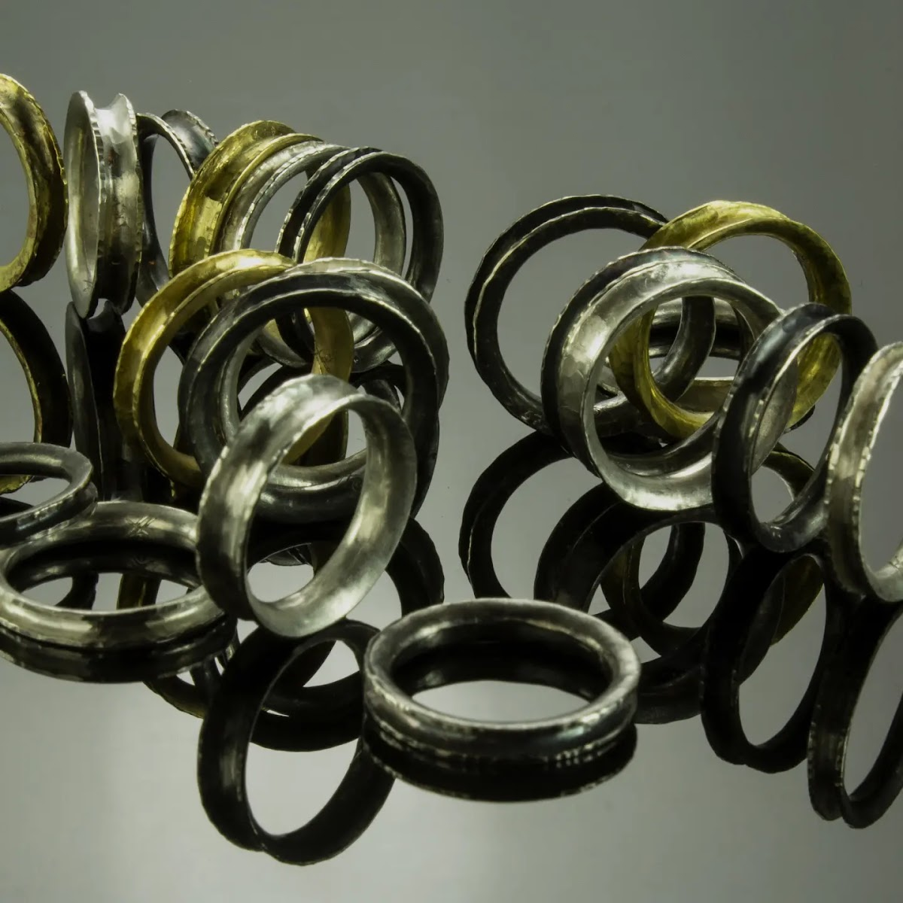
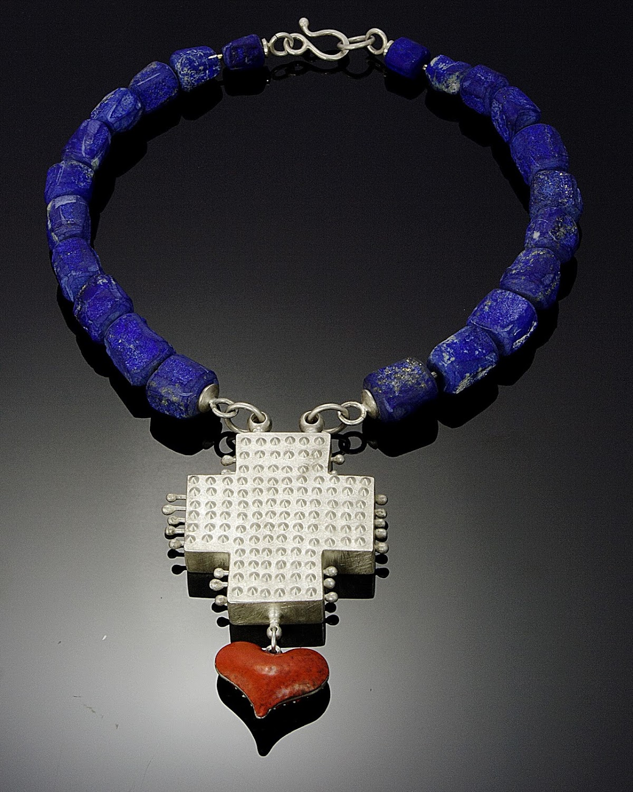
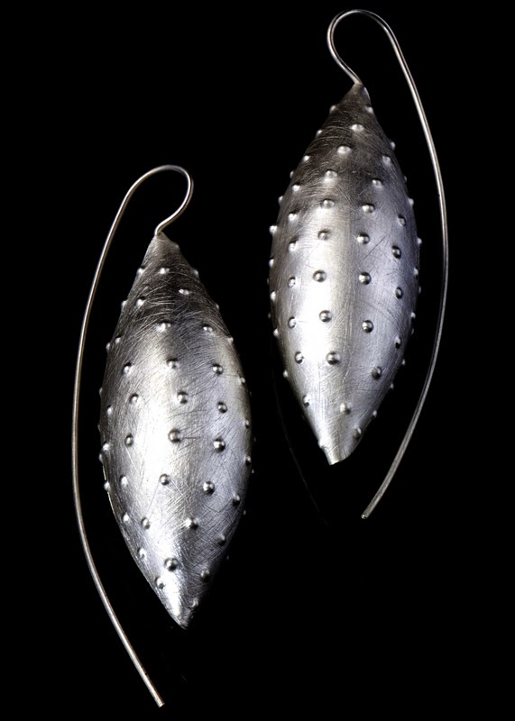
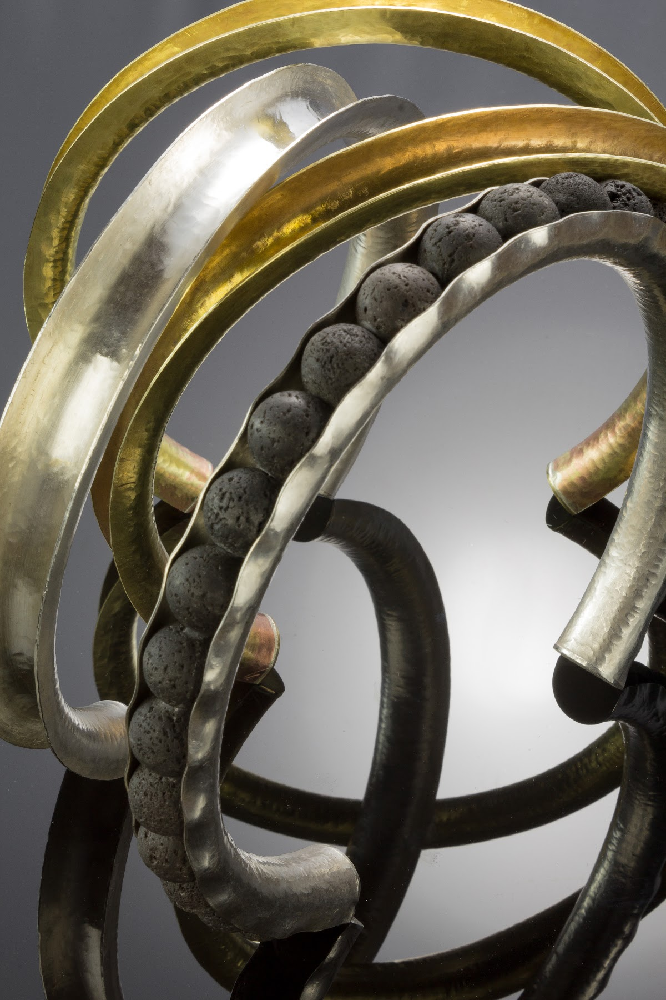
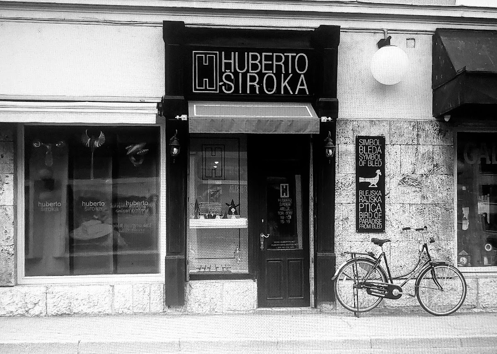
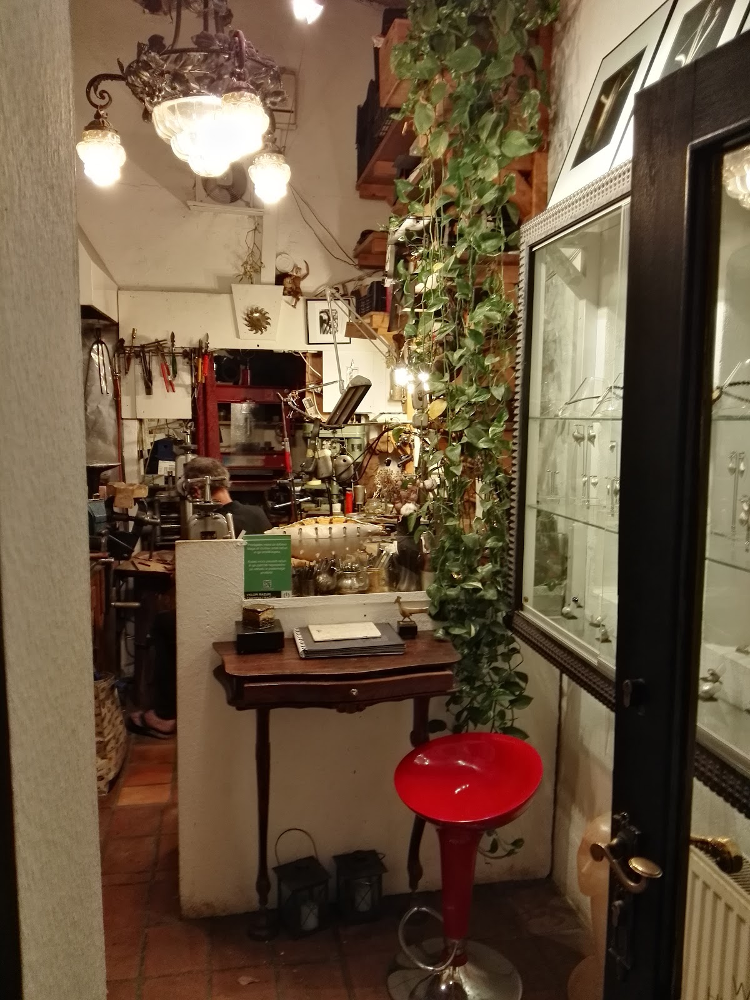
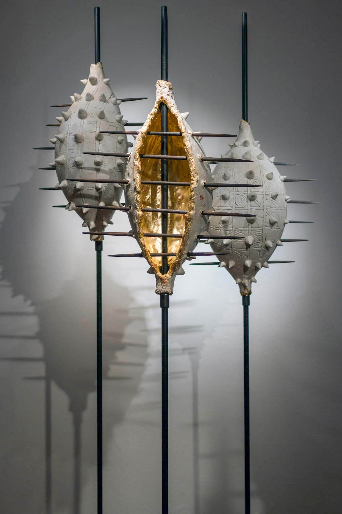
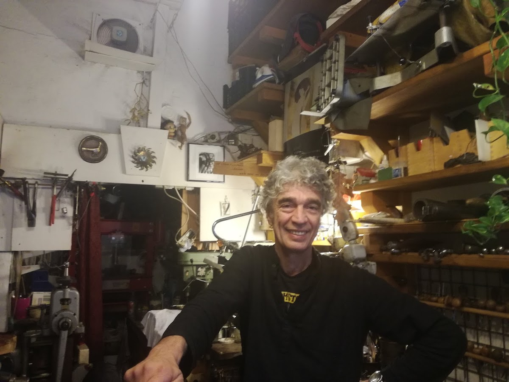
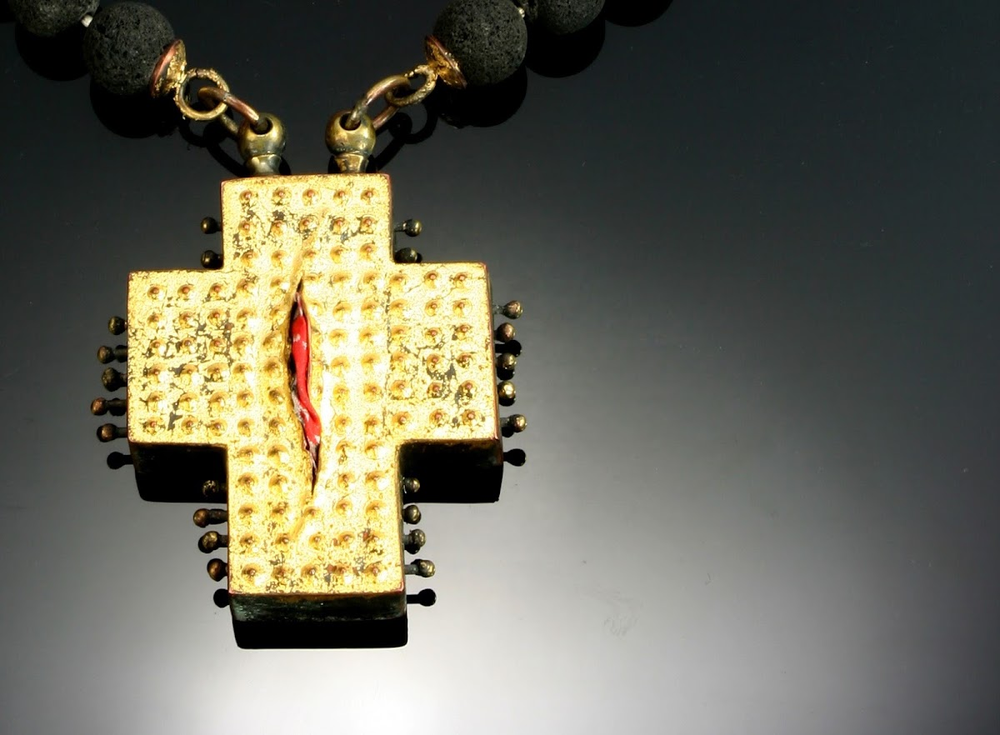

Ročno izdelani kosi
V studiu nastajajo kosi nakita, ki so rezultat ročnega dela, znanja in dolgoletne tradicije družine Široka.
Bled
Ročno izdelan nakit iz srca Bleda
Vsak kos odraža znanje, tradicijo in osebno zgodbo. Doživite srečanje z ustvarjalcem.

Oblikovalec
Huberto Široka je oblikovalec nakita, ki ustvarja na Bledu. Njegova družina se z izdelovanjem nakita ukvarja že tri generacije. Znanje je izpopolnjeval pri različnih mojstrih, kar se odraža v prepletu tehnik in pristopov. V svoji delavnici združuje srebrokovaštvo, medaljerstvo in ustvarjalnost, pri čemer nakitu vrača njegov osnovni namen. Obisk v studiu je priložnost za osebni stik z ustvarjalcem.

Zakaj

V studiu nastajajo kosi nakita, ki so rezultat ročnega dela, znanja in dolgoletne tradicije družine Široka.

Vsak obiskovalec je sprejet s pozornostjo. Pogovor z ustvarjalcem je del izkušnje in nakupnega procesa.

V delavnici na Bledu lahko spoznate različne tehnike izdelave nakita in zgodbo, ki stoji za vsakim kosom.
Obisk
Obisk studia Huberto Široka pomeni srečanje z ročno izdelanim nakitom in ustvarjalcem, ki vas z veseljem popelje skozi svoj ustvarjalni proces. Vsak kos je premišljen in nosi osebno zgodbo.




Kontakt
Za vprašanja ali dogovor o obisku pokličite ali pišite. Odkrijte, kaj pomeni osebni pristop v svetu nakita.
Studio se nahaja na Cesti svobode, v središču Bleda. Okolica ponuja prijeten sprehod, bližino jezera in prijetno vzdušje, ki spodbuja ustvarjalnost in osebni stik.
Cesta svobode 19, 4260 Bled, Slovenia
040 226 805